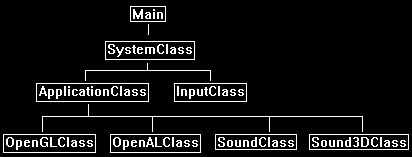

This tutorial will cover how to implement 3D sound using OpenAL with C++.
The code in this tutorial is based on the OpenAL tutorial 56.
We will modify the original code so that sounds are now 3D instead of 2D.
The first concept with 3D sound is that all sounds now have a 3D position in the world.
The x, y, and z position of the sound are the same as the left-handed coordinate system we are using with OpenGL for graphics.
This makes it very easier to create "sound bubbles" around 3D models.
For example, you might have a river located at a specific position in the world.
You could then create a bounding sphere around the river location and any one who enters that sphere then hears the sound of the river.
And the closer they get to the center of the sound in the sound bubble the louder the volume is of that sound.
The next important concept when implementing 3D sound using OpenAL is the use of a listener.
The listener is an interface that represents where the person that is listening is positioned in the 3D world.
OpenAL uses the listener's distance from the position of 3D sounds that are playing to make proper calculations so the sound playing is correct for 3D audio.
There can only be a single listener ever.
Most 3D applications will set the listener position to be the same as the first-person camera view location.
Then as the camera moves the listener position is updated and OpenAL automatically takes care of mixing the 3D audio sounds using the updated listener position.
The audio format for 3D sounds can be anything just like 2D sounds, all you need to do is write the importer for the sound format.
However, there is one restriction for 3D sounds which is that they must be single channel (mono) only.
Dual channel (stereo) sounds will cause OpenAL to send back errors.
In this tutorial we will use the .wav sound format with sound files recorded at 44100 KHz, 16bit, and mono.
Framework
In the framework we have added a new class called Sound3DClass.

Sound3dclass.h
The Sound3DClass is a direct copy of the SoundClass from the last tutorial.
It has been modified with a couple of extra lines of code to support 3D audio loading and playback.
////////////////////////////////////////////////////////////////////////////////
// Filename: sound3dclass.h
////////////////////////////////////////////////////////////////////////////////
#ifndef _SOUND3DCLASS_H_
#define _SOUND3DCLASS_H_
///////////////////////
// MY CLASS INCLUDES //
///////////////////////
#include "openalclass.h"
////////////////////////////////////////////////////////////////////////////////
// Class name: Sound3DClass
////////////////////////////////////////////////////////////////////////////////
class Sound3DClass
{
private:
struct RiffWaveHeaderType
{
char chunkId[4];
unsigned int chunkSize;
char format[4];
};
struct SubChunkHeaderType
{
char subChunkId[4];
unsigned int subChunkSize;
};
struct FmtType
{
unsigned short audioFormat;
unsigned short numChannels;
unsigned int sampleRate;
unsigned int bytesPerSecond;
unsigned short blockAlign;
unsigned short bitsPerSample;
};
public:
Sound3DClass();
Sound3DClass(const Sound3DClass&);
~Sound3DClass();
bool LoadTrack(char*, float);
void ReleaseTrack();
bool PlayTrack(bool);
bool StopTrack();
We have a new function to update the position of the 3D sound.
bool Update3DPosition(float, float, float);
private:
The load function now loads mono files instead of stereo ones.
bool LoadMonoWaveFile(char*);
void ReleaseWaveFile();
private:
unsigned int m_audioBufferId, m_audioSourceId;
unsigned char* m_waveData;
unsigned int m_waveSize;
};
#endif
Sound3dclass.cpp
////////////////////////////////////////////////////////////////////////////////
// Filename: sound3dclass.cpp
////////////////////////////////////////////////////////////////////////////////
#include "sound3dclass.h"
Sound3DClass::Sound3DClass()
{
m_waveData = 0;
}
Sound3DClass::Sound3DClass(const Sound3DClass& other)
{
}
Sound3DClass::~Sound3DClass()
{
}
bool Sound3DClass::LoadTrack(char* filename, float volume)
{
bool result;
// Initialize the error state through a reset.
alGetError();
// Generate an audio buffer.
alGenBuffers(1, &m_audioBufferId);
if(alGetError() != AL_NO_ERROR)
{
return false;
}
The LoadTrack function now calls the new LoadMonoWaveFile function.
// Load the wave file for the sound.
result = LoadMonoWaveFile(filename);
if(!result)
{
return false;
}
// Copy the wav data into the audio buffer.
alBufferData(m_audioBufferId, AL_FORMAT_MONO16, m_waveData, m_waveSize, 44100);
if(alGetError() != AL_NO_ERROR)
{
return false;
}
// Release the wave data since it was copied into the OpenAL buffer.
ReleaseWaveFile();
// Generate an audio source.
alGenSources(1, &m_audioSourceId);
if(alGetError() != AL_NO_ERROR)
{
return false;
}
// Attach the buffer to the source.
alSourcei(m_audioSourceId, AL_BUFFER, m_audioBufferId);
if(alGetError() != AL_NO_ERROR)
{
return false;
}
// Set the volume to max.
alSourcef(m_audioSourceId, AL_GAIN, 1.0f);
if(alGetError() != AL_NO_ERROR)
{
return false;
}
return true;
}
void Sound3DClass::ReleaseTrack()
{
// Release the audio source.
alDeleteSources(1, &m_audioSourceId);
// Release the audio buffer.
alDeleteBuffers(1, &m_audioBufferId);
return;
}
bool Sound3DClass::PlayTrack(bool looping)
{
// Initialize the error state through a reset.
alGetError();
if(looping == true)
{
// Set it to looping.
alSourcei(m_audioSourceId, AL_LOOPING, AL_TRUE);
if(alGetError() != AL_NO_ERROR)
{
return false;
}
}
else
{
// Set it to not looping.
alSourcei(m_audioSourceId, AL_LOOPING, AL_FALSE);
if(alGetError() != AL_NO_ERROR)
{
return false;
}
}
// If looping is on then play the contents of the sound buffer in a loop, otherwise just play it once.
alSourcePlay(m_audioSourceId);
if(alGetError() != AL_NO_ERROR)
{
return false;
}
return true;
}
bool Sound3DClass::StopTrack()
{
// Initialize the error state through a reset.
alGetError();
// Stop the sound from playing.
alSourceStop(m_audioSourceId);
if(alGetError() != AL_NO_ERROR)
{
return false;
}
return true;
}
The LoadMonoWaveFile function works almost identically to the LoadStereoWaveFile function from the last tutorial.
There are just some minor changes since the audio file is going to be mono instead of stereo.
bool Sound3DClass::LoadMonoWaveFile(char* filename)
{
FILE* filePtr;
RiffWaveHeaderType riffWaveFileHeader;
SubChunkHeaderType subChunkHeader;
FmtType fmtData;
unsigned int count, seekSize;
bool foundFormat, foundData;
// Open the wave file for reading in binary.
filePtr = fopen(filename, "rb");
if(filePtr == NULL)
{
return false;
}
// Read in the riff wave file header.
count = fread(&riffWaveFileHeader, sizeof(riffWaveFileHeader), 1, filePtr);
if(count != 1)
{
return false;
}
// Check that the chunk ID is the RIFF format.
if((riffWaveFileHeader.chunkId[0] != 'R') || (riffWaveFileHeader.chunkId[1] != 'I') || (riffWaveFileHeader.chunkId[2] != 'F') || (riffWaveFileHeader.chunkId[3] != 'F'))
{
return false;
}
// Check that the file format is the WAVE format.
if((riffWaveFileHeader.format[0] != 'W') || (riffWaveFileHeader.format[1] != 'A') || (riffWaveFileHeader.format[2] != 'V') || (riffWaveFileHeader.format[3] != 'E'))
{
return false;
}
// Read in the sub chunk headers until you find the format chunk.
foundFormat = false;
while(foundFormat == false)
{
// Read in the sub chunk header.
count = fread(&subChunkHeader, sizeof(subChunkHeader), 1, filePtr);
if(count != 1)
{
return false;
}
// Determine if it is the fmt header. If not then move to the end of the chunk and read in the next one.
if((subChunkHeader.subChunkId[0] == 'f') && (subChunkHeader.subChunkId[1] == 'm') && (subChunkHeader.subChunkId[2] == 't') && (subChunkHeader.subChunkId[3] == ' '))
{
foundFormat = true;
}
else
{
fseek(filePtr, subChunkHeader.subChunkSize, SEEK_CUR);
}
}
// Read in the format data.
count = fread(&fmtData, sizeof(fmtData), 1, filePtr);
if(count != 1)
{
return false;
}
// Check that the audio format is WAVE_FORMAT_PCM (1).
if(fmtData.audioFormat != 1)
{
return false;
}
The major change is that we need to confirm the file is recorded in a mono format.
3D sound files must be recorded as single channel (mono).
// Check that the wave file was recorded in mono format.
if(fmtData.numChannels != 1)
{
return false;
}
// Check that the wave file was recorded at a sample rate of 44.1 KHz.
if(fmtData.sampleRate != 44100)
{
return false;
}
// Ensure that the wave file was recorded in 16 bit format.
if(fmtData.bitsPerSample != 16)
{
return false;
}
// Seek up to the next sub chunk.
seekSize = subChunkHeader.subChunkSize - 16;
fseek(filePtr, seekSize, SEEK_CUR);
// Read in the sub chunk headers until you find the data chunk.
foundData = false;
while(foundData == false)
{
// Read in the sub chunk header.
count = fread(&subChunkHeader, sizeof(subChunkHeader), 1, filePtr);
if(count != 1)
{
return false;
}
// Determine if it is the data header. If not then move to the end of the chunk and read in the next one.
if((subChunkHeader.subChunkId[0] == 'd') && (subChunkHeader.subChunkId[1] == 'a') && (subChunkHeader.subChunkId[2] == 't') && (subChunkHeader.subChunkId[3] == 'a'))
{
foundData = true;
}
else
{
fseek(filePtr, subChunkHeader.subChunkSize, SEEK_CUR);
}
}
// Store the size of the data chunk.
m_waveSize = subChunkHeader.subChunkSize;
// Create a temporary buffer to hold the wave file data.
m_waveData = new unsigned char[m_waveSize];
// Read in the wave file data into the newly created buffer.
count = fread(m_waveData, 1, m_waveSize, filePtr);
if(count != m_waveSize)
{
return false;
}
// Close the file once done reading.
fclose(filePtr);
return true;
}
void Sound3DClass::ReleaseWaveFile()
{
// Release the wave data.
if(m_waveData)
{
delete [] m_waveData;
m_waveData = 0;
}
return;
}
Here is our new function that can update the position of the 3D sound.
bool Sound3DClass::Update3DPosition(float posX, float posY, float posZ)
{
float position[3];
// Set the 3D position of the sound.
position[0] = posX;
position[1] = posY;
position[2] = posZ;
alSourcefv(m_audioSourceId, AL_POSITION, position);
if(alGetError() != AL_NO_ERROR)
{
return false;
}
return true;
}
Applicationclass.h
////////////////////////////////////////////////////////////////////////////////
// Filename: applicationclass.h
////////////////////////////////////////////////////////////////////////////////
#ifndef _APPLICATIONCLASS_H_
#define _APPLICATIONCLASS_H_
/////////////
// GLOBALS //
/////////////
const bool FULL_SCREEN = false;
const bool VSYNC_ENABLED = true;
const float SCREEN_NEAR = 0.3f;
const float SCREEN_DEPTH = 1000.0f;
///////////////////////
// MY CLASS INCLUDES //
///////////////////////
#include "inputclass.h"
#include "openglclass.h"
#include "openalclass.h"
#include "soundclass.h"
Include our new Sound3DClass header.
#include "sound3dclass.h"
////////////////////////////////////////////////////////////////////////////////
// Class Name: ApplicationClass
////////////////////////////////////////////////////////////////////////////////
class ApplicationClass
{
public:
ApplicationClass();
ApplicationClass(const ApplicationClass&);
~ApplicationClass();
bool Initialize(Display*, Window, int, int);
void Shutdown();
bool Frame(InputClass*);
private:
bool Render();
private:
OpenGLClass* m_OpenGL;
OpenALClass* m_OpenAL;
Define a 3D sound object called m_TestSound2.
Sound3DClass* m_TestSound2;
};
#endif
Applicationclass.cpp
////////////////////////////////////////////////////////////////////////////////
// Filename: applicationclass.cpp
////////////////////////////////////////////////////////////////////////////////
#include "applicationclass.h"
ApplicationClass::ApplicationClass()
{
m_OpenGL = 0;
m_OpenAL = 0;
Set the 3D sound object to null in the class constructor.
m_TestSound2 = 0;
}
ApplicationClass::ApplicationClass(const ApplicationClass& other)
{
}
ApplicationClass::~ApplicationClass()
{
}
bool ApplicationClass::Initialize(Display* display, Window win, int screenWidth, int screenHeight)
{
char filename[256];
bool result;
// Create and initialize the OpenGL object.
m_OpenGL = new OpenGLClass;
result = m_OpenGL->Initialize(display, win, screenWidth, screenHeight, SCREEN_NEAR, SCREEN_DEPTH, VSYNC_ENABLED);
if(!result)
{
cout << "Error: Could not initialize the OpenGL object." << endl;
return false;
}
// Create and initialize the OpenAL object.
m_OpenAL = new OpenALClass;
result = m_OpenAL->Initialize();
if(!result)
{
cout << "Error: Could not initialize the OpenAL object." << endl;
return false;
}
Here we create and load in our 3D sound called sound02.wav.
// Set the filename for the sound to load.
strcpy(filename, "../Engine/data/sound02.wav");
// Create and initialize the sound object.
m_TestSound2 = new Sound3DClass;
result = m_TestSound2->LoadTrack(filename, 1.0f);
if(!result)
{
cout << "Error: Could not initialize the test sound 2 object." << endl;
return false;
}
Now set the position of the sound over far to the left.
// Set the 3D position of the sound.
result = m_TestSound2->Update3DPosition(-2.0f, 0.0f, 0.0f);
if(!result)
{
cout << "Error: Could not set the sound position." << endl;
return false;
}
Next, we play the 3D sound.
// Play the sound.
result = m_TestSound2->PlayTrack(true);
if(!result)
{
cout << "Error: Could not play the sound." << endl;
return false;
}
return true;
}
void ApplicationClass::Shutdown()
{
Release the 3D sound in the Shutdown function.
if(m_TestSound2)
{
// Stop the sound if it was still playing.
m_TestSound2->StopTrack();
// Release the sound object.
m_TestSound2->ReleaseTrack();
delete m_TestSound2;
m_TestSound2 = 0;
}
// Release the OpenAL object.
if(m_OpenAL)
{
m_OpenAL->Shutdown();
delete m_OpenAL;
m_OpenAL = 0;
}
// Release the OpenGL object.
if(m_OpenGL)
{
m_OpenGL->Shutdown();
delete m_OpenGL;
m_OpenGL = 0;
}
return;
}
bool ApplicationClass::Frame(InputClass* Input)
{
bool result;
// Check if the escape key has been pressed, if so quit.
if(Input->IsEscapePressed() == true)
{
return false;
}
// Render the final graphics scene.
result = Render();
if(!result)
{
return false;
}
return true;
}
bool ApplicationClass::Render()
{
// Clear the buffers to begin the scene.
m_OpenGL->BeginScene(0.0f, 0.0f, 0.0f, 1.0f);
// Present the rendered scene to the screen.
m_OpenGL->EndScene();
return true;
}
Summary
The sound engine now has 3D sound capabilities through the use of OpenAL.
To Do Exercises
1. Compile and run the program. You should hear a 3D sound to the left side. Press escape to quit.
2. Change the position of the sound to other 3D locations.
If you have a good sound setup it should sound very 3D, however if you have just a headset or 2 speakers the 3D audio effect will be less pronounced.
3. Change the position of the listener. Listen for the difference in respect to the position of the 3D sound.
4. Load four different sounds and play them in the four different corners around the listener.
For example, put the listener at (0,0,0) and the sounds at (-1,0,-1), (1,0,-1), (-1,0,1), and (1,0,1).
5. Modify the program to load in your sound format (mp3, 22050 KHz, 24bit, etc.).
Source Code
Source Code and Data Files: gl4linuxtut57_src.tar.gz